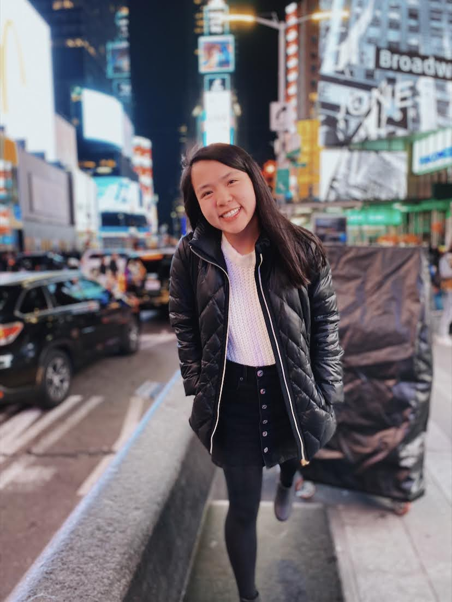

About Me

Hi! I'm Anna and welcome again to Curiosity and Wonder! I'm so happy you're here. :) I spend most of my year in Chicago at Loyola University Chicago studying Computer Science. I also have minors in Computer Crime and Forensics as well as Criminal Justice. When I am not in Chicago, I call Doylestown, PA home. This blog is part my desire to share my passions and what I am up to and part to work on HTML and CSS. I've always loved writing and photography, and blogging seemed like the perfect combination of both. I do not get to spend as much time writing as I used to, not unless you consider writing code as writing ;). This will be a lifestyle blog about all of my passions - photography, travel, and baking. There might be a few additions as I continue writing, but you'll just have to wait and see.